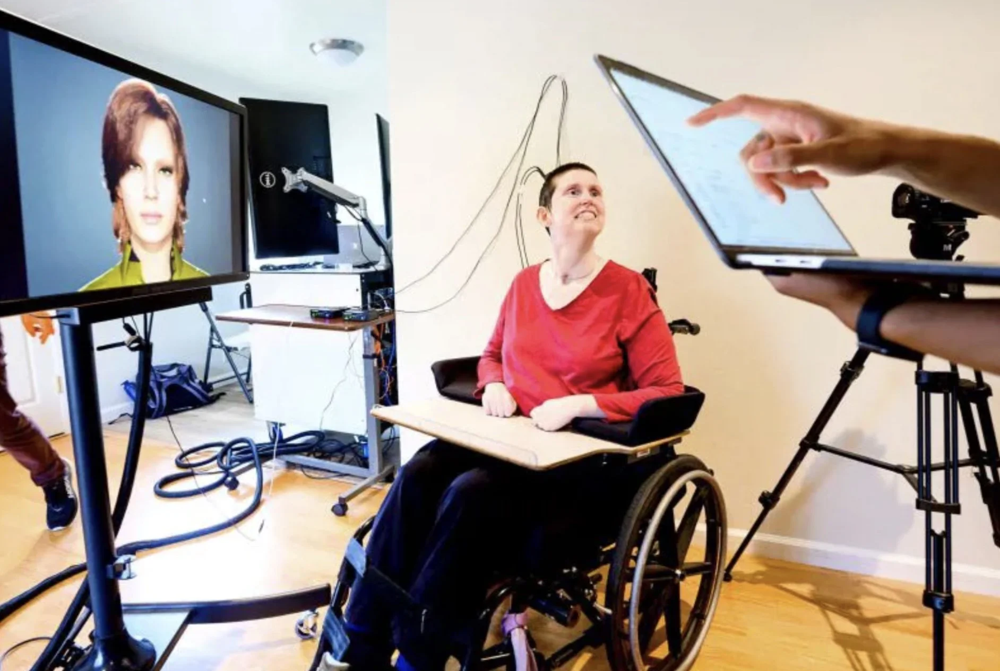

A collaborative enterprise of UCSF and UC Berkeley.
Since its inception in 2010, CNEP has supported an unparalleled community of collaborative neural engineering researchers across UCSF and UC Berkeley.

Integrating cutting-edge engineering with world-class basic and clinical neuroscience.
The Center's focus is on integrating cutting-edge engineering with world-class basic and clinical neurosciences to develop technology that helps patients suffering from disabling neurological conditions. We foster cross-disciplinary collaborations, enable data and technology exchanges, and support top-tier training for the next generation of neural engineering innovators.
Across our projects — including efforts to restore sensory, motor and cognitive function, as well as programs focused on relieving neuropsychiatric symptoms — we apply the latest approaches in data science, electrical engineering, neuroscience, and an array of clinical specialties to develop ground-breaking solutions for patients.